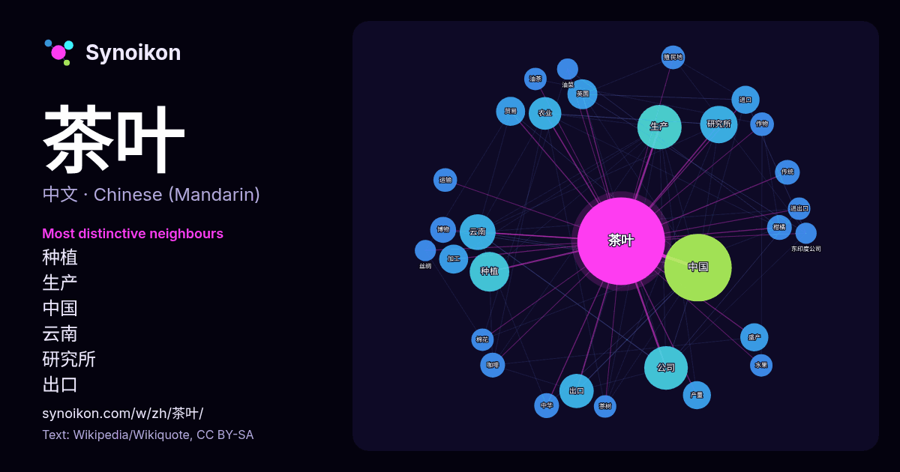

中文 · 每日一词列表
茶叶
“tea” · 来自维基百科, Wikiquote 670 次出现中其周围的词。

最具特色的邻近词
- 种植 27×
- 生产 25×
- 中国 24×
- 云南 21×
- 研究所 21×
- 出口 18×
- 农业 17×
- 盛产 15×
- 加工 15×
- 进口 14×
- 产量 14×
- 贸易 14×
- 柑橘 12×
- 咖啡 11×
- 英国 11×
- 公司 11×
- 博物 11×
- 作物 11×
- 茶树 9.9×
- 油茶 9.9×
× = 比维基百科普通文本中多出的倍数。
最常见的邻近词
- 中国 81
- 生产 35
- 公司 34
- 种植 28
- 研究所 25
- 云南 23
- 出口 21
- 农业 19
- 主要 18
- 英国 16
- 加工 15
- 贸易 15
- 产量 14
- 地区 14
- 盛产 14
- 进口 14
- 博物 12
- 上海 11
- 中华 11
- 人民 11
上下文
- 茶叶的公司竞相成立。在英格兰，议会于1698年授权东印度公司垄断茶叶进口。当茶叶在英国殖民地流行时，议会于1721年通过了一项排除外国竞争的法案，要求殖民地只能从英国进口茶叶。东印度公司并没有向殖民地出口茶叶；根据法律，该公司必须在英国的拍卖会上批发销售其茶叶。英国公司购买了东印度公司的茶叶 Wikipedia snippets · 波士頓傾茶事件
- 中国茶叶股份有限公司是中华人民共和国最早从事茶叶出口的国营企业，也是中国最大的茶叶进出口企业。其商标为“外八中红字，内绿茶字”，寓意“中国茶叶销往四面八方”。 中国茶叶股份有限公司的前身是成立于1949年的中国茶业公司，首任经理为时任中国农业部副部长的吴觉农。中国茶业公司之后曾更名为中国茶叶 Wikipedia snippets · 中茶公司
- 先向长辈倒酒。在长辈先喝酒后，才能饮酒。饮酒时不能面对着长辈而要把脸稍转向左侧再喝。 韩国的茶叶最初是在朝鲜三国时期从中国引入，历史上曾盛行。朝鲜王朝中后期茶叶开始在朝鲜半岛衰退，不过1980年代以来，茶叶茶开始在韩国复兴。韩国茶礼作为韩国茶仪式有千年的历史。韩国茶礼以“和、敬、俭、真”为宗旨。“ Wikipedia snippets · 大韩民国
- 红茶是经过采摘、萎凋、揉捻、发酵、干燥等步骤生产出来的；比绿茶多了发酵的过程。发酵是指茶叶在空气中氧化，发酵作用使得茶叶中的茶多酚和鞣质酸减少，产生了茶黄素、茶红素等新的成分和醇类、醛类、酮类、酯类等芳香物质。因此，红茶的茶叶呈黑色，或黑色中参杂着嫩芽的橙黄色；茶汤呈深红色；香气扑鼻；由于少了苦涩味，因而味道更香甜、醇厚、回甘。 Wikipedia snippets · 红茶
- 正山小种红茶，又称立山小种（Lapsang Souchong）是中国生产的一种红茶，被称为红茶鼻祖。茶叶经松木熏製而成，有着非常浓烈的松烟香。正山小种产地在福建省武夷山市桐木关。茶叶呈黑色，条形紧索，但茶汤为深红色，有特有的桂圆汤味。正山小种红茶非常适合于咖喱和肉的菜肴搭配。后来在正山小种的基础上发展了功夫红茶。 Wikipedia snippets · 正山小种
- 量约343万吨，约77%的老挝农户实现稻米自给。糯米是老挝人的主食，因此老挝人主要种植糯稻。经济作物主要有绿豆、黄豆、花生、烟草、棉花、甘蔗、咖啡和茶叶，其中咖啡的种植面积居首位，占经济作物总种植面积的一半。 老挝亦盛产热带水果，芒果年产量1万吨至2万吨，老挝人称之为“果中之王”；葡萄柚是老挝名产水 Wikipedia snippets · 老挝
- 精英地位的象征，尽管鸡奸违背了性规范。公共沐浴比以往时期普遍得多。城市商店和零售商出售各种商品，例如用于祭祀祖先的紙錢、特色奢侈品、头饰、精美布料、茶叶等等。较小的社区和乡镇由于过于贫困或分散，无法维持商店和工匠的生存，只能通过定期举办的集市和流动商贩来获取商品。小乡镇也为简易教育、新闻和闲聊、姻缘 Wikipedia snippets · 明朝
- 增加，成为全国重要的粮食产区。白糖的製造始於唐贞观二十一年（647年），宋以後長江以南各省種植甘蔗。种植贩运茶叶的发展形成南方经济的一大收入。饮茶的习俗，从南方传到北方，逐渐普及。南方的茶叶，通过大运河和陆路大批运往北方各地，至吐蕃渤海，甚至远及波斯大食。然因賦稅不足，國用匱乏，贞元九年（793年 Wikipedia snippets · 唐朝
更多词
于 2026-10-09 以默认设置预先计算（±5 个词，中等语料）。交互式图可用实时数据刷新。
界面为机器翻译，欢迎指正。